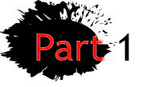

Information Page
Index



Part 4
"It has to be our generation that says, no, we are not going to take this anymore. Now is our one and only chance to stand up, because if we don’t do it now, when?"
David Hogg, Parkland Survivor-Turned-Activist David Hogg, 17: 'Now Is Our One and Only Chance to Stand Up'
These are a few of the main requests I ask of you. But before I end this letter I kindly ask you to please do us a favor and listen. Listen to those “kids” advocating for change while also having to grieve for the seventeen people who were killed. I know you might want to instead extinguish their efforts. But their words will keep burning until you really listen.
Kindly,
Alicia B.